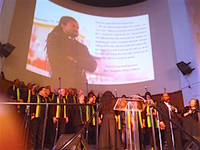
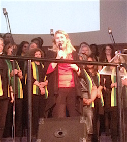
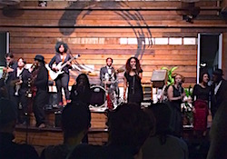

Friends,
This Sunday, Jan. 31, FOR Bayard Rustin Fellow Rev. Osagyefo Sekou and The Holy Ghost will release their landmark album of social justice songs, "The Revolution Has Come."
Pre-order your copy now for just $10.
 The nine-track project by Rev. Sekou and The Holy Ghost, featuring Jay-Marie Hill, celebrates gutbucket blues, gospel, soul, and funk at once. The single, "We Comin" -- a protest anthem -- features the eight-piece Saint Boogie Brass Brand. Harmonica, rock guitar, and a B3 Hammond organ carry the listener to protest ecstasy. Based on chants from the streets, the song reminds the powers that be that movement is here to stay. "We Comin" is a both party and protest. The nine-track project by Rev. Sekou and The Holy Ghost, featuring Jay-Marie Hill, celebrates gutbucket blues, gospel, soul, and funk at once. The single, "We Comin" -- a protest anthem -- features the eight-piece Saint Boogie Brass Brand. Harmonica, rock guitar, and a B3 Hammond organ carry the listener to protest ecstasy. Based on chants from the streets, the song reminds the powers that be that movement is here to stay. "We Comin" is a both party and protest.
The mournful track "Goodbye Baby" -- an elegy for the mothers of the martyred -- embodies slave field hollers and 1960s hard blues. The stolen lives of trans folks are remembered in Jay-Marie Hill's heart-wrenching ballad "Past Time." War, Eros, and redemption are captured in "Hell No," "Sanctified" and "Welcome Home."
|

Rev. Sekou at Glide Memorial Church.

Rev. Stoneking at Glide Memorial Church.

Rev. Sekou and The Holy Ghost at the Oakland, California, release party.
|
The sonic landscape of "The Revolution Has Come" captures the toll of southern field hands, grieving mothers' wails, the vibrancy of contemporary street protest, backwoods juke joints, and shotgun churches -- all driven by Jay-Marie Hill's funk bass line.
For more of the back story on the writing of the songs and making of the album, see this wonderful article published by St. Louis Public Radio.
The album is being produced by the St. Louis-based label FarFetched, in collaboration with FOR-USA and Eloveate Music.
Listen to the first track, and get your copy today!
This past Sunday, Rev. Sekou and FOR Executive Director Rev. Kristin Stoneking were deeply honored to present some of this new movement music at GLIDE Memorial Church in San Francisco. GLIDE is a radically inclusive, just and loving community mobilized to alleviate suffering and break the cycles of poverty and marginalization.
Rev. Stoneking introduced FOR’s Bayard Rustin Fellow, Rev. Osagyefo Sekou, and thanked Pastor Karen for her welcoming introduction, reiterating that "The Fellowship of Reconciliation and GLIDE have been involved in the same pursuit of justice and unconditional love for a long time -- we are together in the struggle and together in the spirit!"
As part of the Sunday celebration, Rev. Sekou, Jay-Marie Hill and The Holy Ghost joined with the legendary GLIDE Ensemble to bring the spirit through song. Watch the video for a special preview of the music on the album!
The band also held an album release party in Oakland, California, and are planning one for this weekend in St. Louis.
Pre-order the music right now, online.
In solidarity and struggle,
 Linda E. Kelly Linda E. Kelly
Director of Communications
Fellowship of Reconciliation
|